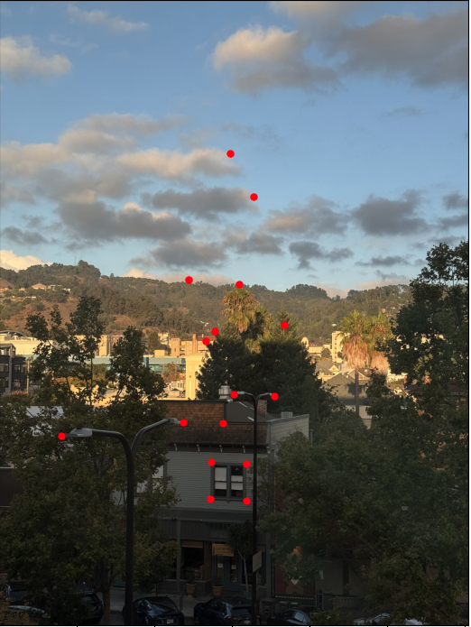

Part A.1: Shoot the Pictures
In this part, I took 3 sets of images with projective transformations between them.
I made sure to maintain a fixed center of projection by keeping my body fixed and only rotating my hands to rotate the phone camera.

Room Image 1

Couch Image 1

Couch Image 2
Part A.2: Recover Homographies
In this part, I calculated the homography matrix by taking in the correspondence points per image.

Function to compute homography matrix from correspondence points per image.
Here is the system of equations utilized to calculate the homography matrix
Room Image 1 Correspondence
Room Image 2 Correspondence

Couch Image 1 Correspondence
Couch Image 2 Correspondence
Scenery Image 1 Correspondence

Scenery Image 2 Correspondence
Part A.3: Warp the Images
In this part, I wrote functions to warp the images using both nearest neighbor interpolation and bilinear interpolation utilizing inverse warping.
Then, I applied these warping functions on 2 images for rectification.
First, I retrieved the bounding box of the image and afterwards I iterated through the ranges of points to apply the inverse homotgraphy matrix on the output points to generate the input points.
I normalized these input points and then set the warped image indices to the appropriate image points. In addition, I set the alpha channel values to 1 where the image is defined and 0 otherwise.
For nearest neighbor interpolation, I rounded the input coordinates to the nearest pixel value. For bilinear interpolation, I used a weighted average of the 4 neighboring pixels for the input coordinates.
Function to warp image using nearest neighbor interpolation.
Function to warp image using bilinear interpolation.

Original TV Image

Nearest Neighbor Warped TV Image

Original Valkyries Image

Nearest Neighbor Warped Valkyries Image

Bilinear Warped Valkyries Image
Nearest Neighbor Interpolation vs. Bilinear Interpolation
The warped images generated using bilinear interpolation are slightly smoother than the warped images generated using nearest neighbor interpolation.
Specifically, for the TV images, the border around the TV is smoother in the bilinear interpolated image, especially on the right edge.
This can similarly be seen on the borders of the valkyries jersey towel.
Although the difference is very subtle, it is still there.
Part A.4: Blend the Images Into a Mosaic
In this part, I blended the original images from A.1 into mosaics.
First, I generated the homography matrices for both images. I made the first image the homography matrix recovered in A.2 and the other the identity matrix to warp the first image onto the second.
Next, I retrieved the bounding boxes for both images using the previous bounding box function I wrote in A.3.
Afterwards, I created a homography matrix for the final mosaic and multiplied that by the image homography matrices to generate the final image homographies.
To calculate the alpha channel for each image, I set it to 1 at the center and 0 at the edges of the image, falling off linearly.
Lastly, I used a weighted average for the final image utilizing these alpha channel values to retrieve the final mosaic.
Room 1 Image

Room Mosaic
Couch 1 Image
Couch 2 Image

Couch Mosaic

Scenery Mosaic
Part B.1: Harris Corner Detection
In this part, utilized the starter code with the get_harris_corners and dist2 functions to first get the Harris corners and plot them without ANMS.
Next, I utilized Adaptive Non-Maximal Supression, or ANMS, by getting the Harris corners, calculating the corner strength function, and looping through all corners to calculate the minimum suppression radius.
I utilized a mask to filter out points that were not robust based on the corner strength function.
Next, I calculated the suppression radius per point and finally retrieved the top 500 coordinates with the largest suppression radii.
Utilizing ANMS ensured that the chosen coordinates were better distributed across the image rather than grouped in certian areas.

Harris Corners

Harris Corners with ANMS
Part B.2: Feature Descriptor Extraction
In this part, I extracted the features of the image.
First, I retrieved the ANMS corners using the previous part (B.1).
Then, I downsampled the image by blurring it using a Gaussian filter.
After, I looped through all of the ANMS corners and sampled patches from 40x40 windows around the corners.
I exxtraced axis-aligned 8x8 patches from these windows and used bias/gain normalization for the visualizations to be in the [0, 1] range.
Lastly, I flattened these normalized patches to convert them to feature descriptor vectors.
Below are 16 of these feature descriptor vectors.
Part B.3: Feature Matching
In this part, I matched features across 2 images.
First, I retrieved the feature descriptor vectors for both images using the previous part (B.2).
Next, I calculated an array of the difference in distances between both feature descriptor vectors by utilizing the provided dist2 function.
Next, I looped through these distance differences and retrieved the error for the nearest neighbor and error for the second nearest neighbor by sorting these distances for each index.
Utilizing this, I applied Lowe's technique with a threshold value of 0.5 to identify which matches were best.
With this technique, I was able to identify the best matching features. Utilizing Lowe's technique, I was able to retrieve 25 matching features as shown below.

Matching Features Between Image Pairs
Part B.4: RANSAC for Robust Homography
In this part, I utilized RANSAC to filter out the outlier feature matches present in the previous image (B.3).
First, I retrieved the feature pairs using the feature matching function I wrote in the previous part (B.3).
Then I implemented a RANSAC loop with 1000 iterations.
In each iteration of this loop, I retrieved 4 random feature pairs, computed the homograph utilizing these pairs and found the inliers by calculating the distance between the points in the second image compared to the first image multiplied by the homography.
I kept track of the largest set of inliers in this loop and lastly recomputed the least squares H estimate from these inliers.
Utilizing this final homography H, I generated the mosaics for all three images below.
Room Mosaic Manual Stitching - Part A

Room Mosaic Automatically Stitching - Part B
Couch Mosaic Manual Stitching - Part A

Couch Mosaic Automatically Stitching - Part B
Scenery Mosaic Manual Stitching - Part A

Scenery Mosaic Automatically Stitching - Part B
Comparison Between Manually and Automatically Stitching
FIX BELOW
The warped images generated using bilinear interpolation are slightly smoother than the warped images generated using nearest neighbor interpolation.
Specifically, for the TV images, the border around the TV is smoother in the bilinear interpolated image, especially on the right edge.
This can similarly be seen on the borders of the valkyries jersey towel.
Although the difference is very subtle, it is still there.
Conclusion
The most important thing I learned from this project was how intricate the process of image blending and image editing truly is.
Overall, the process seems so much simpler when utilizing user interfaces to automatically generate these images for you, but the mathematical equations behind these edits are so complex.
This project has made me appreciate these tools and libraries that efficiently optimize this process so much more, and I am now eager to understand the inner workings of additional imaging techniques.